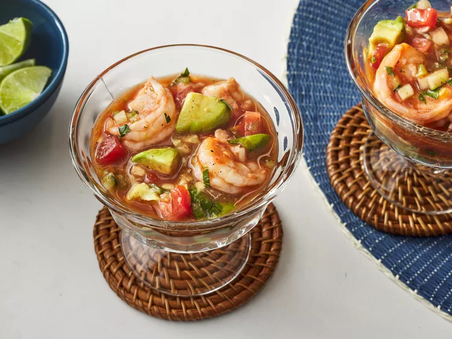

Authentic Mexican Shrimp Cocktail

Description
This authentic Mexican shrimp cocktail is a refreshing and flavorful dish that combines cooked shrimp with a zesty tomato sauce, avocado, and fresh herbs. It's perfect for hot summer days or as a light appetizer.
Ingredients
Original recipe yields 4 servings
- ⅓ cup Spanish onion, chopped
- ¼ cup freshly squeezed lime juice
- 1 pound chilled cooked medium shrimp - peeled, deveined, and tails removed
- 2 roma (plum) tomatoes, chopped
- 1 cucumber, finely chopped
- 1 jalapeno pepper, seeded and finely chopped
- 2 teaspoons salt
- 2 teaspoons ground black pepper
- 1 ½ cups chilled tomato and clam juice cocktail (such as Clamato®)
- 1 cup chilled ketchup (such as Heinz®)
- 1 bunch fresh cilantro - stems discarded and leaves chopped
- 2 tablespoons hot pepper sauce (such as Valentina®)
- 2 avocados - peeled, pitted, and chopped
Steps
- Gather all ingredients.
- Mix onion with lime juice in a small bowl and allow to stand for 10 minutes.
- Meanwhile, toss shrimp, roma tomatoes, cucumber, celery, jalapeno, salt, and black pepper in a medium bowl until thoroughly combined.
- Whisk tomato and clam juice cocktail, ketchup, cilantro, and hot pepper sauce in a separate bowl; stir dressing into shrimp mixture.
- Gently fold in avocados. Stir in onion mixture. Cover and chill thoroughly, at least 1 hour.
- Enjoy!